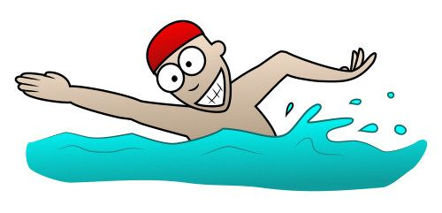

College
He took the entrance exam in July 1998. The results were very close and he was informed that he was accepted as a regular student of the College of Economics and started his studies in October of the same year. The first exam he passed was Political Economy, the most difficult exam in the first year of college, and it is the subject where he had a problem with the teacher in high school, who, although he learned the material, did not want to give him an A because of his behavior in class. He passed that exam in college, and the professor told him that it could have been done better.When he went to Belgrade, he lived privately in a room with two pensioners, a married couple, and they had a house in a place near the Danube, but further from Belgrade, so it turned out for not such a small sum of money, as he paid for the room, on spring and summer he was alone in an eighty-square-meter apartment. He was also a diligent student, he passed exams and studied regularly. He studied the Management Accounting exam with a friend, although it was difficult, he mastered it and she failed that exam. He lived with pensioners until October 2000, when he moved to New Belgrade, where he also lived with pensioners. He helped them carry the things they bought at the market to the third floor and fixed things around the house. He was there for about two months, and the woman who was, an old woman, who was in contact with him the most, regretted that she was leaving. From there he got a student dormitory, which was located in Karaburma, a part of Belgrade, but with a small extra payment he changed his place and bought a place in a better dormitory "Ivo Lola Ribar". There he lived in a double room with a roommate from Smederevo, who was the champion of Yugoslavia in orienteering. From there, he takes three exams from the regularly enrolled third year of college, and comes to Čačak, where he had a house that was in a quiet and isolated place, where he prepared for the most difficult exams at the university: Strategic Management, Economics of Yugoslavia and International Economic Relations. At that time he lived on the Čačak-Beograd route. He spent more time in Čačak, because he was preparing for those demanding exams, and he would go to Belgrade when it was time to take the exams. He was still involved in sports, although not basketball, then he ran, and in the summer he swam both in the Morava, a river that passes through Čačak, and in Ada Ciganlija in Belgrade. He spent the most beautiful time, besides exams, on the track in Čačak, where he sometimes met friends from childhood and socialized with them. He graduated from college in 2003. And he got a degree in Economist, and he finished everything within the deadline.